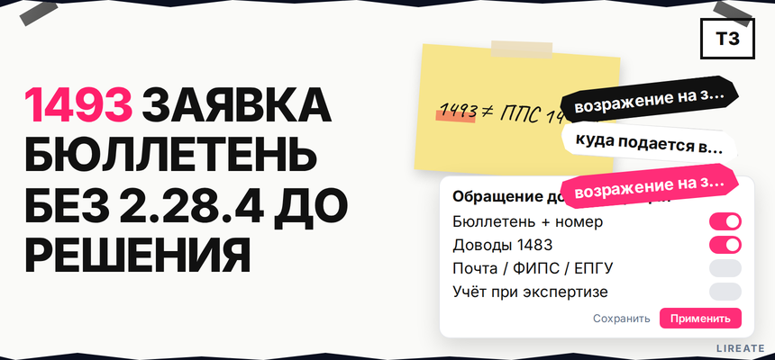
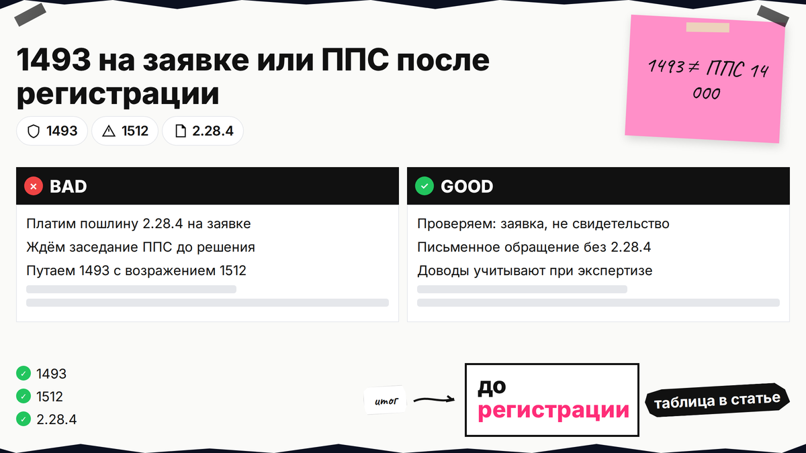
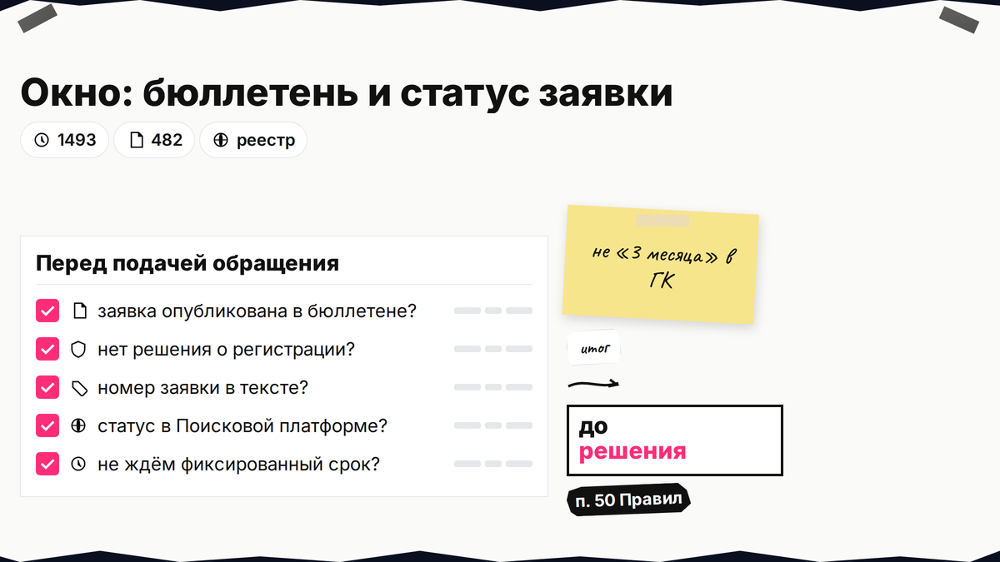
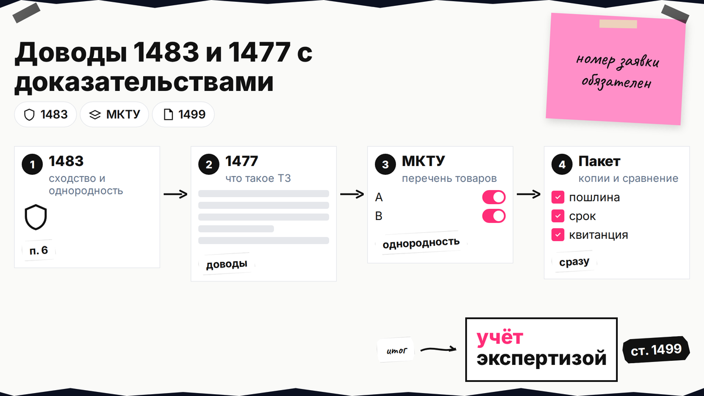

Вы нашли в бюллетене Роспатента чужую заявку, похожую на ваш бренд, и в поиске видите запрос "возражение на заявку на товарный знак" - но подать "как в ППС" с пошлиной 14 000 рублей нельзя: до регистрации действует другое правило. Ниже вы оформите обращение по ст. 1493 ГК РФ после публикации заявки и до решения экспертизы, укажете номер заявки и доводы по ст. 1477 и 1483, отправите документ в Роспатент без пошлины 2.28.4 и поймёте, когда пора переходить к оспариванию уже выданного свидетельства.

TL;DR / Быстрый инсайт: Запрос возражение на заявку на товарный знак в быту чаще означает обращение по ст. 1493, а не возражение в Палате по патентным спорам. После публикации сведений о заявке в официальном бюллетене и до решения о регистрации подать его может любое лицо (ст. 1493 ГК РФ). В тексте обязателен регистрационный номер заявки и мотивированные доводы о несоответствии обозначения ст. 1477 и 1483 с доказательствами (п. 50 Правил № 482). Доводы учитываются при экспертизе (ст. 1499); отдельной пошлины за обращение в таблице пошлин (п. 2.28.4 — только для ППС) нет. Срока "3 месяца" в ГК для 1493 нет.
Гайд только для стадии до выдачи свидетельства. Если знак уже зарегистрирован, окно 1493 закрыто — см. гайд по возражению против регистрации чужого ТЗ и карту процедур в материале об оспаривании в Роспатенте. Нормы сверены на 02.11.2026; это не индивидуальная юридическая консультация.

В выдаче смешивают 1493 (заявка), 1512-1513 (свидетельство, ППС, 2.28.4) и возражение заявителя на отказ (ст. 1500). Здесь - только 1493.
| Параметр | Обращение ст. 1493 (заявка) | Возражение ст. 1512-1513 (свидетельство) |
|---|---|---|
| Стадия | Заявка на рассмотрении, до решения о регистрации | Знак уже внесён в реестр |
| Кто подаёт | Любое лицо (ст. 1493) | Заинтересованное лицо для ряда оснований (ст. 1513) |
| Пошлина 2.28.4 | Отдельного пункта в таблице нет | Да (ориентир 14 000 ₽ — п. 2.28.4) |
| Заседание ППС | Нет, учёт при экспертизе | Да, коллегия ППС |
Делайте: проверить в реестре, есть ли уже свидетельство или только заявка. Не делайте: платить пошлину 2.28.4 и ждать заседания, если спор ещё на стадии заявки - это другой маршрут — см. гайд по возражению против чужого знака.

Роспатент публикует сведения о поданных заявках в официальном бюллетене (ст. 1493 п. 1). Обращение принимают после этой публикации и до решения о государственной регистрации (абз. 3 ст. 1493). Учёт доводов - до решения по результатам экспертизы (п. 50 Правил № 482).
Публикация в бюллетене - после регистрации заявки (п. 14 Правил № 482), ориентир по сроку выхода - до 15 раб. дней (п. 66 приказа № 483), не дедлайн подачи обращения.
Делайте: в Поисковой платформе зафиксировать номер, дату бюллетеня и статус. Не делайте: ждать "3 месяца" или требовать статуса заинтересованного лица - по 1493 достаточно быть любым лицом.

Закон требует доводы о несоответствии обозначения ст. 1477 (что такое товарный знак) и ст. 1483 (основания для отказа). Частый аргумент правообладателя - сходство до смешения с более ранним знаком в отношении однородных товаров (п. 6 ст. 1483). Также используют описательность, ложные сведения, иные пункты 1483.
По п. 8 ст. 1483 нужны подтверждённые сведения, номер заявки и подача до решения; иначе доводы могут не учесть (инф. сообщение Роспатента). Допматериалы не запрашивают - соберите пакет сразу.
Делайте: писать мотивированно, со ссылками на конкретные пункты 1483. Не делайте: отправлять эмоциональное письмо без доказательств и без номера заявки.
Форма - письменная, язык - русский. Обязательно укажите регистрационный номер рассматриваемой заявки (п. 50 Правил № 482). Структура, которую удобно проверить перед отправкой:
Делайте: дублировать номер заявки в шапке, заголовке и первом абзаце. Не делайте: подавать бланк возражения ППС по ст. 1513 - это другой документ (Правила ППС 644/261).
Документы по заявкам: лично, почтой, факс + оригинал, ФИПС, ЕПГУ (п. 9 Правил № 482). Адрес: Бережковская наб., 30-1; почта 125993, Г-59, ГСП-3. Пошлины за 1493 в таблице пошлин нет; 2.28.4 - только для возражения после регистрации.
Делайте: опись или номер подачи на ФИПС/ЕПГУ. Не делайте: оплачивать 14 000 ₽ по 2.28.4 для обращения на заявке.
После подачи доводы учитываются при экспертизе заявленного обозначения (ст. 1499). Возможны отказ в регистрации, регистрация с уточнённым перечнем или регистрация в полном объёме, если экспертиза не согласится с доводами. Гарантии отказа нет; ответное письмо эксперта вам не обязаны направлять.
Маршрут до регистрации:
Бюллетень / реестр → проверка статуса заявки → пакет по 1493 → подача (почта / окно / ФИПС / ЕПГУ) → учёт при экспертизе → решение о регистрации или отказе → при регистрации: ветка 1512-1513 (возражение против чужого знака)
Мониторьте статус заявки в Поисковой платформе. Делайте: сохранить копию обращения и подтверждение отправки. Не делайте: считать себя "стороной" спора с правом на отзыв как в ППС - вы инициатор доводов, а не участник коллегии.
Обращение 1493 не подходит, если:
После регистрации по ряду оснований действует срок 5 лет с публикации регистрации (ст. 1512 п. 2). Детали — в гайде по возражению против чужого знака, карта процедур — в материале об оспаривании в Роспатенте.
Делайте: оценить силу доказательств: слабый пакет на 1493 иногда лучше усилить к моменту ППС с патентным поверенным. Не делайте: повторно слать тот же текст "как 1493" после регистрации - нужно возражение по 1512-1513.
Если спорная заявка бьёт по ядру бренда, имеет смысл подключить патентного поверенного до отправки обращения. На Лирейт можно заказать регистрацию и защиту товарного знака и помощь в подготовке доводов по 1483.
Материал проверен: эксперт Елена Ковалева (главный эксперт по SEO/GEO), редакция Лирейт.
Достоверность данных: ст. 1493, 1499, 1477, 1483, 1512-1513 ГК РФ, Правила № 482 (п. 9, 14, 50), регламент № 483 (п. 66), таблица пошлин и страница подачи документов Роспатента сверены с официальными источниками на 02.11.2026. Показы Яндекс Вордстат в среде подготовки материала не запрашивались.
В Роспатент (Бережковская наб., 30-1; почта 125993, Г-59, ГСП-3) - это обращение по ст. 1493, а не подача в ППС. Каналы: почта, окно, факс с оригиналом, сайт ФИПС, ЕПГУ (п. 9 Правил № 482, ЕПГУ).
Отдельного пункта в таблице пошлин за такое обращение нет. 14 000 ₽ по 2.28.4 - за возражение против уже зарегистрированного знака (см. гайд по возражению против чужого знака).
По ст. 1493 - любое лицо после публикации заявки в бюллетене. Статус заинтересованного лица важен для части оснований после регистрации (ст. 1513).
В ГК и Правилах № 482 для 1493 фиксированного срока "3 месяца" нет. Ориентир - подать до решения о регистрации / до решения по экспертизе (ст. 1493, п. 50 Правил № 482).
Обязанности вести переписку нет: доводы учитываются при экспертизе (ст. 1499). Итог увидите в статусе заявки и решении о регистрации или отказе.
Нет. Окно 1493 закрыто - подавайте возражение по ст. 1512-1513 с пошлиной 2.28.4 и процедурой ППС; порядок подачи — в гайде по возражению против чужого знака, карта процедур — в материале об оспаривании в Роспатенте.
Обращение по ст. 1493 — только на стадии заявки; возражение против чужого знака — обе процедуры, ППС, пошлина и срок 5 лет.